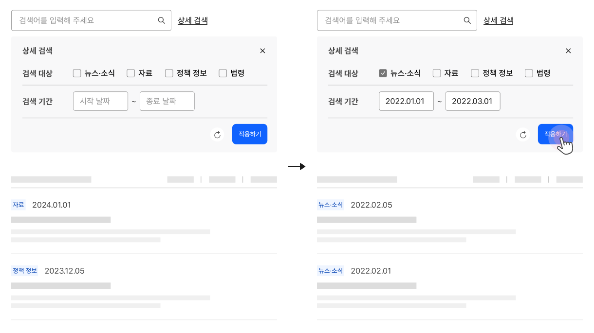
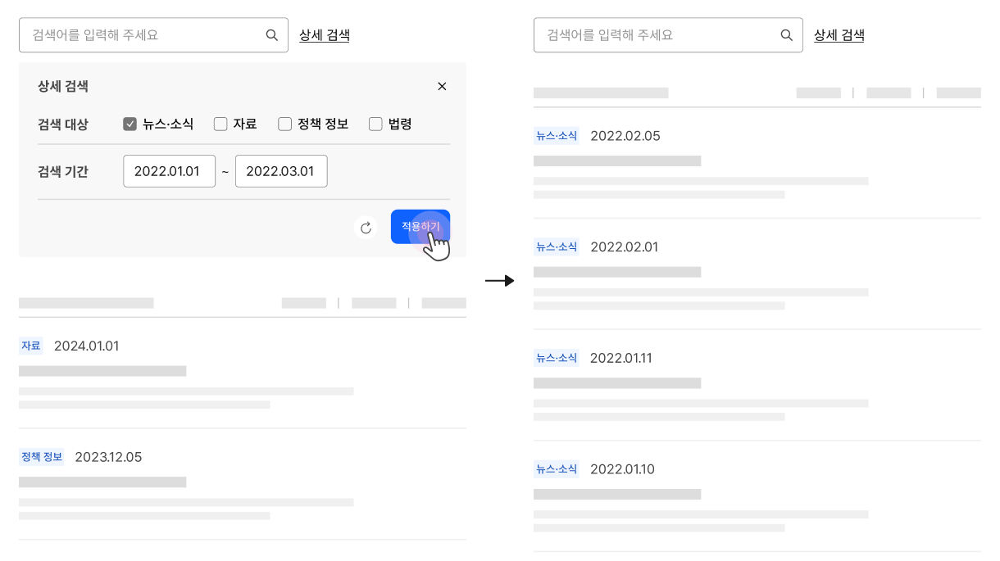

@@include("../inc/guide-lnb.html")
@@include("../inc/page-breadcrumb.html")
@@include("../inc/page-title.html", { "desc" : "" })
@@include("../inc/page-quick-nav.html")

구조
- 1.정렬 컨트롤검색 결과 목록의 순서를 변경하는데 사용되는 컨트롤
- 2.필터 컨트롤검색 결과 목록을 특정 주제, 범주, 속성으로 제한하는 데 사용되는 컨트롤
사용성 가이드라인
필수상세 검색 컨트롤을 숨기지 않는다.
화면 너비로 인해 상세 검색 컨트롤이 모달에서 제공되지 않는 한 상세 검색 컨트롤은 사용자가 검색 과정을 반복하는 동안 항상 표시되어야 한다. 상세 검색 컨트롤을 숨기면 재검색 과정에서 상세 검색 수단을 발견하지 못하거나, 설정한 조건을 기억하지 못해 실수할 가능성이 높아진다.
모범 사례

피해야 할 사례

필수사용자가 설정한 상세 검색 조건을 유지한다.
사용자가 의도적으로 설정을 해제하기 전까지 재검색 전 과정 동안 상세 검색 조건을 유지하여 사용자가 필요한 맥락 내에서 연속적으로 검색을 수행할 수 있도록 해야 한다.
권장상세 검색 조건의 적용을 일괄적으로 해제할 수 있는 수단을 제공하고 직관적으로 인지할 수 있도록 표현한다.
기본 검색 외에 복합 검색, 고급 검색이 사용되는 경우 사용자가 여러 개의 범주와 속성별로 조건을 설정할 수 있으므로 재검색 과정에서 조건 전체를 변경하고자 하는 경우 일괄 해제 기능을 제공하여 사용자의 행동을 단축시켜야 한다.
예시
| 1Depth | 2Depth | File Link |
|---|---|---|
| 탐색 | 타입1 | html 화면 확인하기 |
| html 화면 확인하기 | ||
| 타입2 | html 화면 확인하기 |
@@include("../inc/page-related-items.html",{
"patternBasis": [
{
"title": "필터링정렬",
"url": "./../global/global_10.html"
},
]
}
)
@@include("../inc/page-faq.html")
@@include("../inc/page-info-update-log.html")
@@include("../inc/page-banner.html")